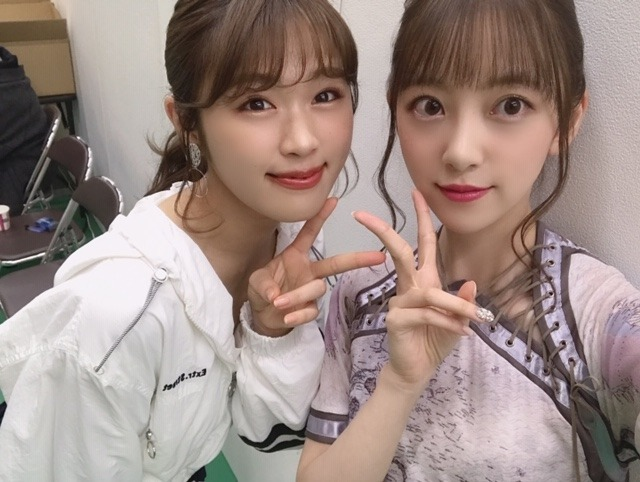
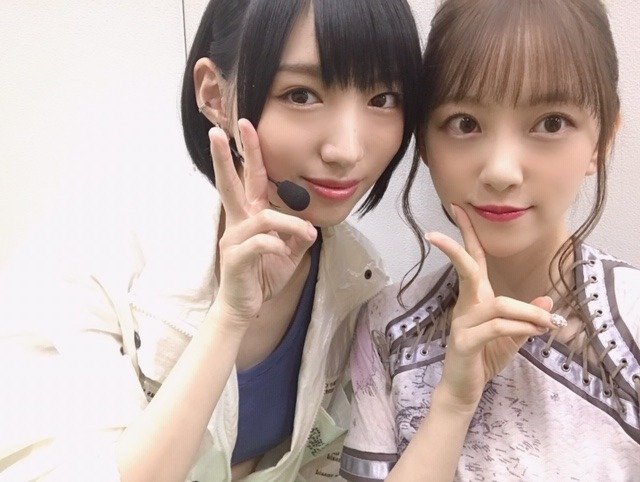

2019/1116Satサーフボードに乗ったまま空を飛ぶ夢を見ました

ベストヒット歌謡祭で久しぶりに会えた
NMB48の渋谷凪咲ちゃん☺︎

太田夢莉ちゃん☺︎
卒業とセンターおめでとう！
そして
写真集公式SNS
フォローよろしくお願いします☺︎
発売は2020年春なので
インスタは私が好きなことをマイペースに自由にいまは更新しています！発売前になったらじゃんじゃん写真集関連のこと、解禁していきますね❤︎
Twitterは編集担当の方が更新してくださっています！
@horimiona_2nd
@horimiona2nd
ではでは
2019/11/16 14:12
コメント(268)
やほー。春発売がきまったね。
あー楽しみだなぁ。
年末は、レコタイがあるね。シングアウトの衣装の未央奈が、凄いかっこよくて好きだからたのしみです。
三連覇して、平成から令和になっても、乃木坂の時代だと示してほしいところです。
ではは
あー楽しみだなぁ。
年末は、レコタイがあるね。シングアウトの衣装の未央奈が、凄いかっこよくて好きだからたのしみです。
三連覇して、平成から令和になっても、乃木坂の時代だと示してほしいところです。
ではは
ヒット歌謡祭めっちゃ可愛かった〜
インスタの更新待ってるね！
インスタの更新待ってるね！
プリントの山になってて親に怒られた笑
整理しないとーーー汗
けっこうみおなちゃん髪色変えてるよね？
いたまない？
キシキシしてて悩んでるんだあ泣
もし、無人島に連れてくなら誰？
明日からテストなんだけど
応援して！！おねがいします！！
あと、インスタ毎回楽しみにしてるよ！！
みおなちゃんだいすこ(///∇///)(///∇///)
紅白レコ大楽しみ
整理しないとーーー汗
けっこうみおなちゃん髪色変えてるよね？
いたまない？
キシキシしてて悩んでるんだあ泣
もし、無人島に連れてくなら誰？
明日からテストなんだけど
応援して！！おねがいします！！
あと、インスタ毎回楽しみにしてるよ！！
みおなちゃんだいすこ(///∇///)(///∇///)
紅白レコ大楽しみ
未央奈ちゃん♥
モバメ、ブログ更新、ありがとう。♥
紅白歌合戦の出場も決まって、ますます、忙しい時期ですね。
焼き肉、美味しかったですか。
いずれの写真も可愛く、素敵です。♥
モバメ、ブログ更新、ありがとう。♥
紅白歌合戦の出場も決まって、ますます、忙しい時期ですね。
焼き肉、美味しかったですか。
いずれの写真も可愛く、素敵です。♥
ブログ更新本当にありがとう(*^-^*)未央奈可愛すぎる(* >ω<)写真集絶対買うね☆〃ベストヒット歌謡祭も可愛かった(*^^*)のぎおび選手権優勝おめでとうﾟ.+:｡∩(・ω・)∩ﾟ.+:｡ずっと応援してます(=ﾟωﾟ)ﾉ
未央奈ちゃん！
ブログ更新ありがとう!
いつも表題が面白いので楽しみにしています。
２期生は、みんなキャラが濃いですね!
これからも未央奈ちゃんフィーバーで頑張ってください。
応援してるよ☺️☺️
ブログ更新ありがとう!
いつも表題が面白いので楽しみにしています。
２期生は、みんなキャラが濃いですね!
これからも未央奈ちゃんフィーバーで頑張ってください。
応援してるよ☺️☺️
空飛んだとか天気の子みたい笑
未央にゃブログ更新有難う
サーフボード
流石に風圧で折れちゃうよ(^_^;)
ありゃウレタンフォームとグラスファイバーだからねww
サーフボード
流石に風圧で折れちゃうよ(^_^;)
ありゃウレタンフォームとグラスファイバーだからねww
乃木坂のメンバーはAKBの皆さんと交流が
あったりするんですな。皆、仲が良い
インスタのストーリー見逃さないで見るよ！
気ままにしてくださいな
収録頑張って！
緊張しちゃうのはしょうがない事だけど
楽しい事を考えつつ頑張れ！
久しぶりに焼肉行ってきたんだね。前よりあんまり
食べれなくなっちゃったんだ
最近、疲れすぎかな？
ゆっくり休んでくださいな！
石焼ビビンバは美味しいよな～
今の時期、食べたくなっちゃうんだよな！
寒いから暖まりながら
あったりするんですな。皆、仲が良い
インスタのストーリー見逃さないで見るよ！
気ままにしてくださいな
収録頑張って！
緊張しちゃうのはしょうがない事だけど
楽しい事を考えつつ頑張れ！
久しぶりに焼肉行ってきたんだね。前よりあんまり
食べれなくなっちゃったんだ
最近、疲れすぎかな？
ゆっくり休んでくださいな！
石焼ビビンバは美味しいよな～
今の時期、食べたくなっちゃうんだよな！
寒いから暖まりながら
未央奈ちゃんこんばんは！ありがとうございます‼楽しみにしてます‼頑張ります‼頑張って下さい。良かったです！
未央奈ちゃんこんばんは！ありがとうございます‼楽しみにしてます‼頑張ります‼頑張って下さい。良かったです！
いつもブログ更新ありがとう！
サーフボードに乗ったまま空飛ぶ夢なんて、
なんか楽しそうだね！笑
夢占いで調べてみたら、
「常識にとらわれず、自由な発想ができることを表します」
と書いてありましたよ！
いろんなことを考えて行動してる未央奈ちゃんにぴったりな夢占いだね！
未央奈ちゃんのポニーテール本当に大好きです！
最近、夜は冷え込むようになりましたので、お身体には十分に気をつけてくださいね！
いつも癒しの画像ありがとう！
サーフボードに乗ったまま空飛ぶ夢なんて、
なんか楽しそうだね！笑
夢占いで調べてみたら、
「常識にとらわれず、自由な発想ができることを表します」
と書いてありましたよ！
いろんなことを考えて行動してる未央奈ちゃんにぴったりな夢占いだね！
未央奈ちゃんのポニーテール本当に大好きです！
最近、夜は冷え込むようになりましたので、お身体には十分に気をつけてくださいね！
いつも癒しの画像ありがとう！
Instagram見れない
ブログはスマホで見てるのですが、
僕専用のスマホじゃないので勝手にできないです。
だから写真見れない。
ごめんなさい。
またね。
ブログはスマホで見てるのですが、
僕専用のスマホじゃないので勝手にできないです。
だから写真見れない。
ごめんなさい。
またね。
みおなちゃん更新ありがとう╰(*´︶`*)╯♡
サーフボードに乗ったまま空を飛ぶ夢って楽しそうな感じだね(*´꒳`*)
ベストヒット歌謡祭お疲れ様でした٩(๑❛ᴗ❛๑)۶
NMBのお二人との写真もありがとう（╹◡╹）♡
インスタもツイッターもフォローして見とるよ♪(๑ᴖ◡ᴖ๑)♪
写真集楽しみです
サーフボードに乗ったまま空を飛ぶ夢って楽しそうな感じだね(*´꒳`*)
ベストヒット歌謡祭お疲れ様でした٩(๑❛ᴗ❛๑)۶
NMBのお二人との写真もありがとう（╹◡╹）♡
インスタもツイッターもフォローして見とるよ♪(๑ᴖ◡ᴖ๑)♪
写真集楽しみです
こんばんわん
１日お疲れ様！！
マウスのパーツメンバー当てクイズ
すぐ堀ちゃんってわかった！！
堀ちゃんのオーラがバンバン伝わって来た笑
やっぱり推しはわかりやすいみたいです
明日もお仕事頑張ってね！
ではまた(*´∇｀*)
１日お疲れ様！！
マウスのパーツメンバー当てクイズ
すぐ堀ちゃんってわかった！！
堀ちゃんのオーラがバンバン伝わって来た笑
やっぱり推しはわかりやすいみたいです
明日もお仕事頑張ってね！
ではまた(*´∇｀*)
みおな
今日もお疲れ様です
写真集の発売が春という事は、まだ少し先になりそうですね
気長に待ってるねー
インスタはこの為に、始めたような物なので写真は毎日チェックしています
2期の4人でツインテールしてるやつとか、みなみとツーショットとかみおながメンバーと仲良くしてる写真を見ると嬉しくなります（１人でも勿論可愛いけどメンバーと写ってる時が一番いい顔してます）
みおなの三つ編みを見た事ないからインスタに載せてくれたら嬉しいです
また更新して下さい
そして、次こそはこないだの握手会の事を書くね
何度か行ってるけど、今回もとても可愛かったです
もうすぐ乃木中だね
ありがとうございました
今日もお疲れ様です
写真集の発売が春という事は、まだ少し先になりそうですね
気長に待ってるねー
インスタはこの為に、始めたような物なので写真は毎日チェックしています
2期の4人でツインテールしてるやつとか、みなみとツーショットとかみおながメンバーと仲良くしてる写真を見ると嬉しくなります（１人でも勿論可愛いけどメンバーと写ってる時が一番いい顔してます）
みおなの三つ編みを見た事ないからインスタに載せてくれたら嬉しいです
また更新して下さい
そして、次こそはこないだの握手会の事を書くね
何度か行ってるけど、今回もとても可愛かったです
もうすぐ乃木中だね
ありがとうございました
未央奈ちゃん、ひろっしーです！コメント投稿619回目です！
前回はブログ「ドレッシングマジック」にブログの感想を書きました！
時間→「No.247 2019年11月 6日 13:56」
ブログ更新ありがとうございます！
コメント遅くなってしまってスミマセン！
前回の「ゆず茶、ゆず入ってなかった事件」！勘違いや思い込みって本当に怖いですね(笑)
でも、僕もこういう勘違いや思い込みって時々あります！一瞬頭が「？」になります(笑)
「ベストヒット歌謡祭」お疲れ様でした！
久々の「Sing Out!」凄く嬉しかったです！
FNS、ベスア、Mステ、レコ大、紅白
今年の年末も大忙しですね！どれも楽しみ～！
そして、紅白出場おめでとうございます！
5年連続ですね！いやぁ、改めて本当に凄い！
乃木坂と欅坂に続き日向坂も出場されますし、今年も坂道グループの勢いが凄かったですね！
さぁ、残るはウラトークの司会は誰なのか？
早く情報解禁して欲しいですね！
「乃木中」観ました！葉月ちゃんのビフォーの写真がビフォー過ぎるせいなのか、アフターと見比べるとこんなにも違うのかと、メイクって凄いなと思ったし、未央奈ちゃんってメイクに凄く詳しいんだと改めて思いました！大尊敬！
葉月ちゃんめっちゃ可愛くなっていましたね！100万円のバッグを買って貰おうとするあの顔って未央奈ちゃんの演出だったんですね(笑)
ここまで読んで頂きありがとうございました！
毎日お仕事お疲れ様です！体調にはくれぐれも気を付けて頑張ってくださいね！
おやすみおな～！
前回はブログ「ドレッシングマジック」にブログの感想を書きました！
時間→「No.247 2019年11月 6日 13:56」
ブログ更新ありがとうございます！
コメント遅くなってしまってスミマセン！
前回の「ゆず茶、ゆず入ってなかった事件」！勘違いや思い込みって本当に怖いですね(笑)
でも、僕もこういう勘違いや思い込みって時々あります！一瞬頭が「？」になります(笑)
「ベストヒット歌謡祭」お疲れ様でした！
久々の「Sing Out!」凄く嬉しかったです！
FNS、ベスア、Mステ、レコ大、紅白
今年の年末も大忙しですね！どれも楽しみ～！
そして、紅白出場おめでとうございます！
5年連続ですね！いやぁ、改めて本当に凄い！
乃木坂と欅坂に続き日向坂も出場されますし、今年も坂道グループの勢いが凄かったですね！
さぁ、残るはウラトークの司会は誰なのか？
早く情報解禁して欲しいですね！
「乃木中」観ました！葉月ちゃんのビフォーの写真がビフォー過ぎるせいなのか、アフターと見比べるとこんなにも違うのかと、メイクって凄いなと思ったし、未央奈ちゃんってメイクに凄く詳しいんだと改めて思いました！大尊敬！
葉月ちゃんめっちゃ可愛くなっていましたね！100万円のバッグを買って貰おうとするあの顔って未央奈ちゃんの演出だったんですね(笑)
ここまで読んで頂きありがとうございました！
毎日お仕事お疲れ様です！体調にはくれぐれも気を付けて頑張ってくださいね！
おやすみおな～！
堀ちゃんこんばんは！
写真集ほんとに楽しみですー！！
2020年春ですか、先のようですが毎日楽しみにしてたらあっという間なんだろうなぁ( ´ ▽ ` )
毎日インスタの投稿もめっちゃ嬉しいですし、今日はストーリーも投稿してくれてめちゃくちゃテンション上がりましたー！！
ストーリーってなんだか堀ちゃんを身近に感じられて凄く嬉しくて、今日はいつもの10倍ぐらいの頻度でインスタ開いちゃいました( ´ ▽ ` )笑
またふとしたときに投稿してもらえると幸せです(o^^o)♩
そして乃木中も見ましたー！
堀ちゃんは本当にメイクが好きでこだわっているのが伝わってきました(o^^o)
僕も筋トレの話だったらずっと喋ってられるので、好きなことへの対し方が共感です( ´ ▽ ` )笑
葉月ちゃんも素顔が可愛いのはあると思いますが、凄くナチュラルに可愛くなっていてビックリでした！
作ったという感じではなく、違和感のない可愛さになっていたのが堀ちゃんの腕なのか！と感嘆です( ´ ▽ ` )
僕も堀ちゃんにプロデュースしてもらいたいものです(^^)笑
そしてそしてきょうは今野さんほっといてよ！で堀北コンビの予告も流れてました！バッチリ見ました！
なんだかもう予告だけで胸が熱くなってしまいました…(*´ー｀*)
昔から大好きな関係性の2人が笑って楽しんで熱く語る、そんなシーンを見られるのが楽しみで仕方ありません！
今から待ち遠しいー！！
今日だけで堀ちゃんにたくさんの幸せをもらいました、楽しかったー！( ´ ▽ ` )
ほんとにいつもありがとうございます、堀ちゃんに出会えて好きになって本当によかった(o^^o)♩
これからもずっと大好きですー！
ではではまた！
写真集ほんとに楽しみですー！！
2020年春ですか、先のようですが毎日楽しみにしてたらあっという間なんだろうなぁ( ´ ▽ ` )
毎日インスタの投稿もめっちゃ嬉しいですし、今日はストーリーも投稿してくれてめちゃくちゃテンション上がりましたー！！
ストーリーってなんだか堀ちゃんを身近に感じられて凄く嬉しくて、今日はいつもの10倍ぐらいの頻度でインスタ開いちゃいました( ´ ▽ ` )笑
またふとしたときに投稿してもらえると幸せです(o^^o)♩
そして乃木中も見ましたー！
堀ちゃんは本当にメイクが好きでこだわっているのが伝わってきました(o^^o)
僕も筋トレの話だったらずっと喋ってられるので、好きなことへの対し方が共感です( ´ ▽ ` )笑
葉月ちゃんも素顔が可愛いのはあると思いますが、凄くナチュラルに可愛くなっていてビックリでした！
作ったという感じではなく、違和感のない可愛さになっていたのが堀ちゃんの腕なのか！と感嘆です( ´ ▽ ` )
僕も堀ちゃんにプロデュースしてもらいたいものです(^^)笑
そしてそしてきょうは今野さんほっといてよ！で堀北コンビの予告も流れてました！バッチリ見ました！
なんだかもう予告だけで胸が熱くなってしまいました…(*´ー｀*)
昔から大好きな関係性の2人が笑って楽しんで熱く語る、そんなシーンを見られるのが楽しみで仕方ありません！
今から待ち遠しいー！！
今日だけで堀ちゃんにたくさんの幸せをもらいました、楽しかったー！( ´ ▽ ` )
ほんとにいつもありがとうございます、堀ちゃんに出会えて好きになって本当によかった(o^^o)♩
これからもずっと大好きですー！
ではではまた！
堀さん、こんばんは。
乃木坂工事中みました。勉強になるし面白かったです。VTRでメークし終わった向井さんが可愛いかったですし、メーク見ただけで何となく堀さんがしたのが分かる気がして不思議でした。
スタジオに来た向井さんのメークと髪型の完成度がVTR中のより上がってたのは向井さんの意識が変わってたからなのかななんて思いました。
あと「すごいハムハムしたでしょ」「しました」のやりとりが凄くお姉さん感有って良かったです。
それと「100万円のバッグ頂いていいんですか」のあざといギャグは本当に素晴らしいと思います。
ギャグにパッケージすることで全力の”可愛い”をすることへの”照れ”を向井さんと、今後の握手会での向井さんのファン両方から取り除いてあげてたような気がしました。堀さんのプロデュースはメークと服だけじゃなくキャラクターにまで及ぶんですね。お見事です。
乃木坂工事中みました。勉強になるし面白かったです。VTRでメークし終わった向井さんが可愛いかったですし、メーク見ただけで何となく堀さんがしたのが分かる気がして不思議でした。
スタジオに来た向井さんのメークと髪型の完成度がVTR中のより上がってたのは向井さんの意識が変わってたからなのかななんて思いました。
あと「すごいハムハムしたでしょ」「しました」のやりとりが凄くお姉さん感有って良かったです。
それと「100万円のバッグ頂いていいんですか」のあざといギャグは本当に素晴らしいと思います。
ギャグにパッケージすることで全力の”可愛い”をすることへの”照れ”を向井さんと、今後の握手会での向井さんのファン両方から取り除いてあげてたような気がしました。堀さんのプロデュースはメークと服だけじゃなくキャラクターにまで及ぶんですね。お見事です。
堀ちゃん(*´︶`*)♡きれ〜い♪
堀さん、おはようございます♪
乃木坂工事中を見ました。
堀さんは死ぬまでメイクを追求したいのですね。
堀さんは向井葉月さんが気になっていたのですね。
向井さんは私服ではメガネを掛けて半ズボン
だったのですね。
堀さんはサーフボードに乗ったまま
空を飛ぶ夢を見たのですね。
僕は階段から足を踏み外す夢を見た時に
びっくりしました＾＾
あ・・・土曜日に放送していた
ターミネーター２ という映画を見ました。
車と車がぶつかるシーンを楽しみました＾＾
人が走ってバイクを追いかけるシーンも
面白かったです＾＾
ターミネーター、スパイダーマン、
キングコング、スターウォーズなどの
アクション映画が好きです＾＾
堀さん、体調に気を付けて
乃木坂工事中の収録やアールの撮影や
映画鑑賞、食事などを楽しんでね☆
僕は今日は 古見さんはコミュ症です
というマンガを買いに行きます。
堀さんが昔、ブログで紹介してくれたマンガです。
堀さんが好きです☆
乃木坂工事中を見ました。
堀さんは死ぬまでメイクを追求したいのですね。
堀さんは向井葉月さんが気になっていたのですね。
向井さんは私服ではメガネを掛けて半ズボン
だったのですね。
堀さんはサーフボードに乗ったまま
空を飛ぶ夢を見たのですね。
僕は階段から足を踏み外す夢を見た時に
びっくりしました＾＾
あ・・・土曜日に放送していた
ターミネーター２ という映画を見ました。
車と車がぶつかるシーンを楽しみました＾＾
人が走ってバイクを追いかけるシーンも
面白かったです＾＾
ターミネーター、スパイダーマン、
キングコング、スターウォーズなどの
アクション映画が好きです＾＾
堀さん、体調に気を付けて
乃木坂工事中の収録やアールの撮影や
映画鑑賞、食事などを楽しんでね☆
僕は今日は 古見さんはコミュ症です
というマンガを買いに行きます。
堀さんが昔、ブログで紹介してくれたマンガです。
堀さんが好きです☆
未央奈さん☆❤️❤️❤️❤️ こんにちは♫ 今日も未央奈さん☆が、元気でいてくれるので嬉しいです！！ 未央奈さん☆忙しい中、モバメとブログの更新！ありがとうございます！ 未央奈さん☆のモバメとブログは生きる活力になっています！ 本当に未央奈さん☆、ありがとう☆彡 未央奈さん☆のファンに対する優しさに助けられています。(^_^)v
未央奈さん☆ 今頃からそんな夢を見ていたら、来年の初夢が楽しみ♫ですね！ 今から楽しみですか？ それからベストヒット歌謡祭は、YouTubeでなんとか見ました。 大阪の女子中高生ダンス部とのダンスの共演！素晴らしかったです！ Sing Outって初めて聞きましたけど、いい曲ですね！ 未央奈さん☆もその中で一番目立ってて良かったです！！ 未央奈さん☆！ほんとダンス上手いですね！ (*^▽^*) それからくっきーさんとのやり取りも面白かったです！ そして乃木坂と姉妹関係にあるNMB４８とも仲良くお喋りしてたんですね。 皆んなと仲良くね！ それから今週逃走中がありますね。楽しみ♫にしています。 そしてWithのOLファッション特集は、買えたら買います。（泣） お金ない‥ （泣泣） じゃあ、未央奈さん☆❤️❤️❤️！ 今日１日も元気でね❤️❤️❤️❤️❤️❤️❤️❤️❤️❤️❤️❤️❤️❤️❤️❤️❤️❤️❤️❤️❤️ 今日１日も未央奈さん☆に良い事がたくさんたくさんたくさんありますように☆彡☆彡☆彡☆彡☆彡 （＾_＾）
未央奈さん☆ 今頃からそんな夢を見ていたら、来年の初夢が楽しみ♫ですね！ 今から楽しみですか？ それからベストヒット歌謡祭は、YouTubeでなんとか見ました。 大阪の女子中高生ダンス部とのダンスの共演！素晴らしかったです！ Sing Outって初めて聞きましたけど、いい曲ですね！ 未央奈さん☆もその中で一番目立ってて良かったです！！ 未央奈さん☆！ほんとダンス上手いですね！ (*^▽^*) それからくっきーさんとのやり取りも面白かったです！ そして乃木坂と姉妹関係にあるNMB４８とも仲良くお喋りしてたんですね。 皆んなと仲良くね！ それから今週逃走中がありますね。楽しみ♫にしています。 そしてWithのOLファッション特集は、買えたら買います。（泣） お金ない‥ （泣泣） じゃあ、未央奈さん☆❤️❤️❤️！ 今日１日も元気でね❤️❤️❤️❤️❤️❤️❤️❤️❤️❤️❤️❤️❤️❤️❤️❤️❤️❤️❤️❤️❤️ 今日１日も未央奈さん☆に良い事がたくさんたくさんたくさんありますように☆彡☆彡☆彡☆彡☆彡 （＾_＾）
みおなちゃん、こんにちは。
乃木坂工事中、僕は見たよ。録画して見ました。乃木坂VTRクイーン決定戦後編でしたね。みおなちゃん、めっちゃ綺麗で、めっちゃかわいかったよ。みおなちゃんのメーク術、すごいですね。
すごく詳しかったね。
普段からかわいい葉月ちゃんが、みおなちゃんのメーク術で、さらにかわいくなりましたね。
みおなちゃん、体調に気をつけて仕事頑張ってね。
またコメントするね。
乃木坂工事中、僕は見たよ。録画して見ました。乃木坂VTRクイーン決定戦後編でしたね。みおなちゃん、めっちゃ綺麗で、めっちゃかわいかったよ。みおなちゃんのメーク術、すごいですね。
すごく詳しかったね。
普段からかわいい葉月ちゃんが、みおなちゃんのメーク術で、さらにかわいくなりましたね。
みおなちゃん、体調に気をつけて仕事頑張ってね。
またコメントするね。
薬指のネイルすごい！めちゃかわいい！
ネイル 紹介してほしい！
ネイル 紹介してほしい！
いい香りがする柔軟剤を探してます。
是非未央奈ちゃんの愛用している柔軟剤を教えてください！
是非未央奈ちゃんの愛用している柔軟剤を教えてください！
明太子フランスは未央奈ちゃんが作ったの？
寒いから眠くなるよな
明太子のパン美味しいし明太子自体も美味しいよね
そう考えると福岡県の人は毎日食べてるんだろうな
明太子を！
もうクリスマスムードになってきちゃったな～
俺の働いてる場所にもクリスマスツリー飾ってあるもんな！
寒いから眠くなるよな
明太子のパン美味しいし明太子自体も美味しいよね
そう考えると福岡県の人は毎日食べてるんだろうな
明太子を！
もうクリスマスムードになってきちゃったな～
俺の働いてる場所にもクリスマスツリー飾ってあるもんな！
未央奈！
乃木中録画していて今観たよ～！
未央奈のメイク動画よかった☺️
本当にメイクが好きで、研究してるんだなって分かって尊敬したよ！
だから綺麗なのか～と思ったよ！
この間の握手会で思ったけど、本当にメイク上手♪
私はあんまり上手に出来ないんだけど、未央奈を見習って頑張るね！！
今日もお疲れさま♪
おやすみおな～(*´～｀*)
乃木中録画していて今観たよ～！
未央奈のメイク動画よかった☺️
本当にメイクが好きで、研究してるんだなって分かって尊敬したよ！
だから綺麗なのか～と思ったよ！
この間の握手会で思ったけど、本当にメイク上手♪
私はあんまり上手に出来ないんだけど、未央奈を見習って頑張るね！！
今日もお疲れさま♪
おやすみおな～(*´～｀*)
乃木中のメイク企画面白かった！！
私もみおなちゃんにメイクしてもらいたい、、、
私もみおなちゃんにメイクしてもらいたい、、、
乃木坂工事中見ました。
未央奈ちゃんのメイクの知識と技術がすごいですね。
メンバーの向井葉月ちゃんのメイクする前と後でこんなに変わるんですね
プロのメイクさんみたいでした。
あと、葉月ちゃんの｢100万のかばんもらっていいですか？｣って感じに見つめてくるの未央奈ちゃんの指示だったのですね
日村さんとのやりとりがウケました。
(笑)
またね。
おやすみなさい。
未央奈ちゃんのメイクの知識と技術がすごいですね。
メンバーの向井葉月ちゃんのメイクする前と後でこんなに変わるんですね
プロのメイクさんみたいでした。
あと、葉月ちゃんの｢100万のかばんもらっていいですか？｣って感じに見つめてくるの未央奈ちゃんの指示だったのですね
日村さんとのやりとりがウケました。
(笑)
またね。
おやすみなさい。
こんばんわん
１日お疲れ様！！
堀ちゃんはファッションやメイクを追及していて本当に凄いなって思う
今週の乃木中でも葉月をメイクしてあげたみたいだね
私は自分自身に合うものがわからないから服もメイクもどうしていいか困っているんだ。。。
だから堀ちゃんに全部私に似合うようにコーディネートしてほしい！！
質問！
堀ちゃんは、自分に似合うって思う基準はどうやって決めているの？
明日もお仕事頑張ってね！
ではまた(*´∇｀*)
１日お疲れ様！！
堀ちゃんはファッションやメイクを追及していて本当に凄いなって思う
今週の乃木中でも葉月をメイクしてあげたみたいだね
私は自分自身に合うものがわからないから服もメイクもどうしていいか困っているんだ。。。
だから堀ちゃんに全部私に似合うようにコーディネートしてほしい！！
質問！
堀ちゃんは、自分に似合うって思う基準はどうやって決めているの？
明日もお仕事頑張ってね！
ではまた(*´∇｀*)
乃木中メイク企画流石ですな。あーも変化するなんて。
初めてコメントします！
向井葉月ちゃんの変身ぶりすごかったです✨
よかったら何の化粧品を使ったのか、ぜひぜひ教えてほしいなぁと思いました！！みおなちゃんにメイクしてもらった葉月ちゃんがうらやましいです…♥ただでさえ美しいのに、美を追求しているみおなちゃんのことを尊敬してます✨
向井葉月ちゃんの変身ぶりすごかったです✨
よかったら何の化粧品を使ったのか、ぜひぜひ教えてほしいなぁと思いました！！みおなちゃんにメイクしてもらった葉月ちゃんがうらやましいです…♥ただでさえ美しいのに、美を追求しているみおなちゃんのことを尊敬してます✨
チャァオ～～!☆彡
美しい～～～～⤴️⤴️
美し過ぎる～～～～⤴️⤴️⤴️
プリンセスみおちゃん、おはようございます❕❤️❤️❤️❤️❤️笑顔
工事中見たよ～～～⤴️⤴️❕❤️❤️❤️❤️❤️笑顔
もぉ～～～⤴️⤴️
美しい～～～⤴️⤴️みおちゃんを、番組でいっぱい見れてぇ
おいらは、大満足でした❕❤️❤️❤️❤️❤️笑顔
理系出身のおいらにとって
メイクは、見ていてとても楽しかったです❕❤️❤️❤️❤️❤️笑顔
みおちゃんが葉月ちゃんにメイクをしている時の
とても優しい～お姉さんの様な感じが
すごく素敵でした❕❤️❤️❤️❤️❤️笑顔
１つ１つ優しく声をかける
まるで小さな女の子をあやすような、あの優しさには、グッときました❕❤️❤️❤️❤️❤️笑顔
これでまた更に更に、みおちゃんが大好きになりました❕❤️❤️❤️❤️❤️笑顔
また番組で、是非メイクの特集が見たいです❕❤️❤️❤️❤️❤️笑顔
楽しみにしています❕❤️❤️❤️❤️❤️笑顔
それでは、美しい～～みおちゃんまたねぇ～～❕❤️❤️❤️❤️❤️笑顔
(*^▽^)/★*☆♪
☆大人しい、おすまし！☆彡
未央奈ちゃん、おはようございます。
工事中見ました。メイク中の真剣な眼差しの未央奈ちゃんが素敵でした。私服も可愛いかった。
黒髪ショート薄化粧の未央奈ちゃんも大好きだから、またいつか見せてね。お願いします。
乃木坂46と頑張ってるcuteでsmartな未央奈ちゃんを応援しています。
工事中見ました。メイク中の真剣な眼差しの未央奈ちゃんが素敵でした。私服も可愛いかった。
黒髪ショート薄化粧の未央奈ちゃんも大好きだから、またいつか見せてね。お願いします。
乃木坂46と頑張ってるcuteでsmartな未央奈ちゃんを応援しています。
未央奈ちゃん好き～⤴️⤴️
結婚しましょうハハ～(..)
故郷雪降っているよ～寒い。
結婚しましょうハハ～(..)
故郷雪降っているよ～寒い。
17日の乃木坂工事中みました ！
！
向井ちゃんにしたメイク道具知りたいです
めちゃくちゃかわいかったので
全部かいます！笑笑
向井ちゃんにしたメイク道具知りたいです
めちゃくちゃかわいかったので
全部かいます！笑笑
メイクは女の子には必要な事であり、紹介する事に
より参考にしたいって言う人は出てくるから
嬉しいことだよね！
みおなちゃんかわいい
より参考にしたいって言う人は出てくるから
嬉しいことだよね！
みおなちゃんかわいい
未央奈さん☆❤️❤️❤️❤️❤️ 今晩は！ お元気ですか？ 今日も良い１日になりましたでしょうか？ 未央奈さん☆！今日１日もお疲れ様でした。 未央奈さん☆！今ぐらいのヘアースタイルが素敵です❤️❤️❤️❤️ ちょっと長めのが一番いいです。 もう素敵な女性になりましたネ❤️❤️❤️❤️❤️❤️❤️❤️ (o^^o) 乃木坂工事中を見ました。未央奈さん☆プロデュースのメイク企画！またやって欲しいです！ 向井葉月さん☆が、あんなに素敵になって！ 未央奈さん☆！は、やはり只者ではないですね！ ほんと未央奈さん☆に無限の可能性を感じます。 メイクは、頭と美に対する感性が良くないと出来ないですね。 未央奈さん☆！本当に凄い！！ （╹◡╹） それにメイクだけではなくて、服装も葉月さん☆に似合ってて、本当に凄い！！ 未央奈さん☆の才能は限りないですね‥ でもバッグ、１００万円もするんですか？ お金ない‥（泣泣泣） (>_<) 未央奈さん☆！またメイク企画やってネ❤️❤️❤️❤️❤️❤️❤️❤️❤️❤️❤️ じゃあ、未央奈さん☆今夜もおやすみおな♫♫♫ 今夜もよくお眠りになってくださいね！ それから明日は、週一度のお楽しみ♫ レコメンがありますネ❤️❤️❤️❤️❤️❤️❤️❤️❤️❤️❤️ 夜遅いので、お身体には気をつけてくださいね！ それからまた乃木坂の「の」は、ないんですか？ ガールズトークは、苦手ですけど、未央奈さん☆だったらいいです。 また放送待ってます。
じゃあ、未央奈さん☆、今夜も風邪ひかないでネ〜❤️❤️❤️❤️❤️❤️❤️❤️❤️❤️❤️❤️❤️❤️❤️❤️❤️❤️❤️❤️❤️ あと逃走中も頑張ってネ！ （＾_＾）
じゃあ、未央奈さん☆、今夜も風邪ひかないでネ〜❤️❤️❤️❤️❤️❤️❤️❤️❤️❤️❤️❤️❤️❤️❤️❤️❤️❤️❤️❤️❤️ あと逃走中も頑張ってネ！ （＾_＾）
こんばんわ。みおなちゃんのメイクいつも参考にさせてもらってます！
こないだの乃木坂工事中の時に、髪の毛につけてたフェイスパウダーって何を使ってるんですか？
これからも、お仕事頑張ってください！応援してます！！！！！！！
こないだの乃木坂工事中の時に、髪の毛につけてたフェイスパウダーって何を使ってるんですか？
これからも、お仕事頑張ってください！応援してます！！！！！！！
こんばんわん
１日お疲れ様！！
#カコミオナ観たよ！
今日はちょっとコメントできる時間がないから、明日感想を言うね
明日もお仕事頑張ってね！
ではまた(*´∇｀*)
１日お疲れ様！！
#カコミオナ観たよ！
今日はちょっとコメントできる時間がないから、明日感想を言うね
明日もお仕事頑張ってね！
ではまた(*´∇｀*)
他のグループとの写真も良きですね(*´ω｀*)
高速まばたき！ いいね。
大好きな未央奈ちゃんお疲れ様です。ドリームバイト見たよ‼️早く未央奈ちゃん出ないかなぁと思っていつも見ていました。そしたら、未央奈ちゃん出てたので、凄く嬉しかった。久しぶりの高速まばたきも見れました。以前より更に速くなったように見えました。乃木坂工事中で、葉月ちゃんにメイクをしてあげて葉月ちゃんの魅力を、引き出してあげた優しいお姉さんのようで、さらに未央奈ちゃんを大好きになりました。更に、きいちゃんとの｢今野さんほっといてよ」のちょっとだけの先行映像を見させていただきました。無邪気に過ごす素の二人の姿も凄くよかったし、真剣な話しをして未央奈ちゃんが思わず、うるってして泣きそうな姿を見て私も半泣きになりました。やっぱり乃木坂46っていいなあ。二期生っていいなあ。堀北コンビっていいなあ。未央奈ちゃんっていいなあと思い、今までの何倍も乃木坂46も未央奈ちゃんも大好きになったし、大好きになってよかったと思います。これからも、体調に気を付けて、頑張ってね❗レコメン坂道ファミリーの菅井ちゃん、かとしちゃんも未央奈ちゃんと写真を一緒にとりたいし、もっと沢山話して仲良くなりたいと言っていたので、絶対実現してほしいなぁ。未央奈ちゃんもかとしちゃんも人見知りだから、自分からいけないそうなので、一応、レコメンでは一番年上の菅井ちゃんから声かけてもらうとなったみたいです。三人とも似てないようで、似ているところも沢山あると思うので、絶対仲良くなれると思います。楽しみです。レコメンあてにも、違う名前でメール送りますよ‼️それじゃー今夜のレコメンで会おうね❗大好きやおー
みおなちゃん、こんにちは。
ドリームバイト、僕は見たよ。録画して見ました。みおなちゃん、めっちゃ綺麗で、めっちゃかわいかったよ。高速まばたき、すごかったです。
みおなちゃん、体調に気をつけて仕事頑張ってね。
またコメントするね。
ドリームバイト、僕は見たよ。録画して見ました。みおなちゃん、めっちゃ綺麗で、めっちゃかわいかったよ。高速まばたき、すごかったです。
みおなちゃん、体調に気をつけて仕事頑張ってね。
またコメントするね。
未央奈ちゃんこんばんは！ありがとうございます‼楽しみにしてます！頑張ります‼頑張って下さい！頑張ります‼今日もレコメン頑張って下さい！頑張ります‼
みおなさん、こんばんは！ミッシェル オスロ監督のディリリとパリの時間旅行はみましたか？アニメと実写が融合した作品で映像の美しさはもちろん、社会問題も盛り込んだストーリーには考えさせられるものもあり、心温まるものもあり、、おすすめです！面白い映画ですよ(*^^*)/ 映画は新しいもの、古いもの、、少しづつ紹介していきたいと思いますので気長に待っててね？
こんばんは！
相変わらすの高速まばたき最高でした！！
今日の朝は餃子だったんだ
食べたくなってきた☺️
凄く寒くなって来たので、体調崩さず頑張ってくださいね✨
相変わらすの高速まばたき最高でした！！
今日の朝は餃子だったんだ
食べたくなってきた☺️
凄く寒くなって来たので、体調崩さず頑張ってくださいね✨
お！朝から餃子暖まりそうで良いね！
今度、11月23日逃走中入るじゃん
未央奈ちゃん上手く出来たか心配になるな？

今度、11月23日逃走中入るじゃん
未央奈ちゃん上手く出来たか心配になるな？
ドリームバイト初出演うれしくてびっくりしました。
いつも未央奈ちゃん出てないから、どうせ今日も出ないんだろうな～ って思って見てたら、未央奈ちゃんが出ててうれしくてびっくりして見いっちゃいました
って思って見てたら、未央奈ちゃんが出ててうれしくてびっくりして見いっちゃいました
可愛かったです。
高速まばたきめっちゃ速くておどろきました。
すごいですね。
またね。
いつも未央奈ちゃん出てないから、どうせ今日も出ないんだろうな～
可愛かったです。
高速まばたきめっちゃ速くておどろきました。
すごいですね。
またね。


48Gのメンバーとも交流があるんだね、良きです。
インスタフォローしてるよ！
発売楽しみにしてるねー